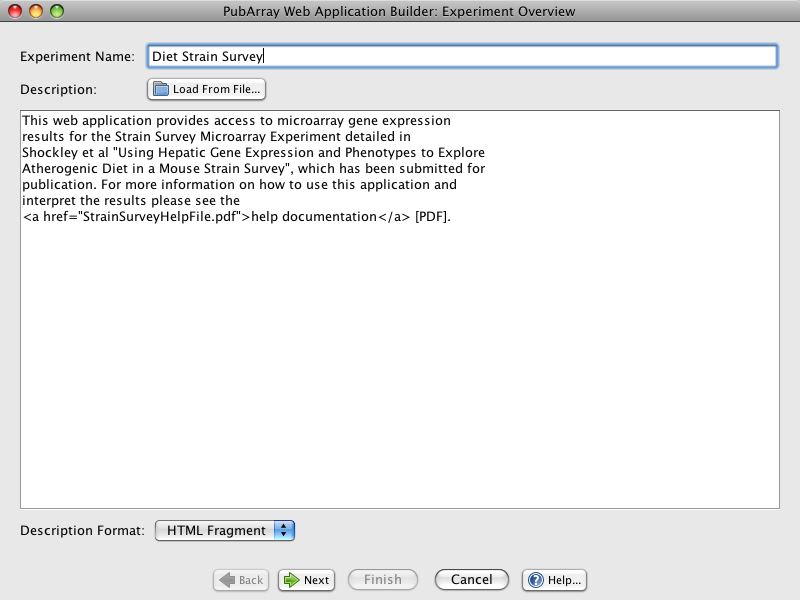
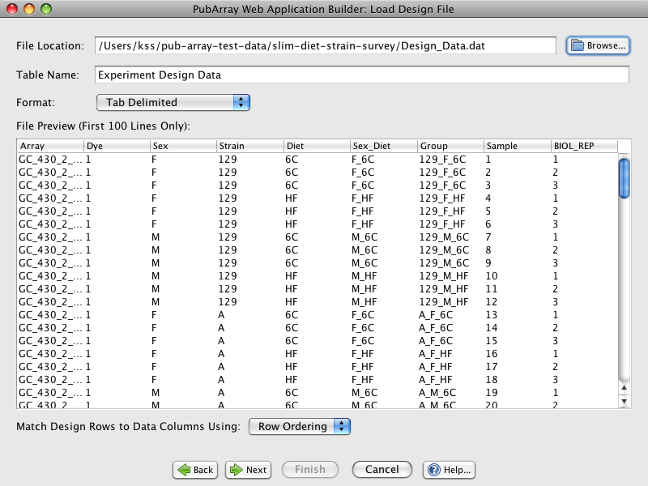
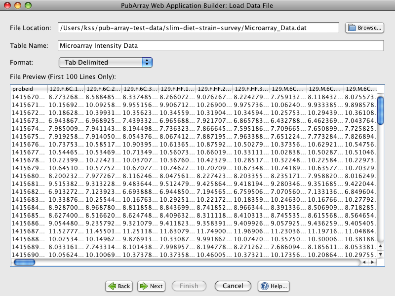
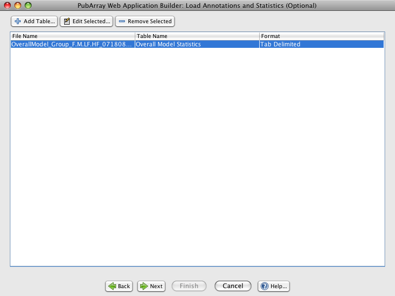
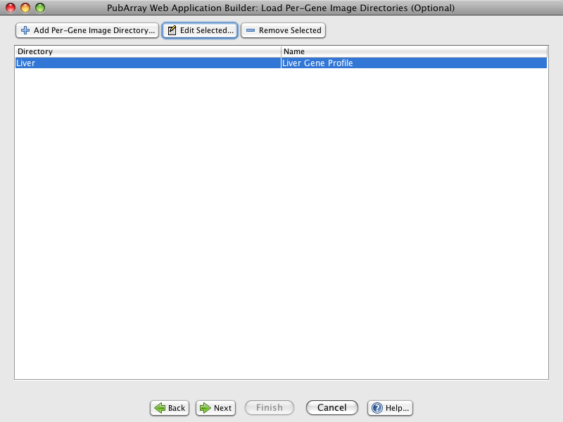
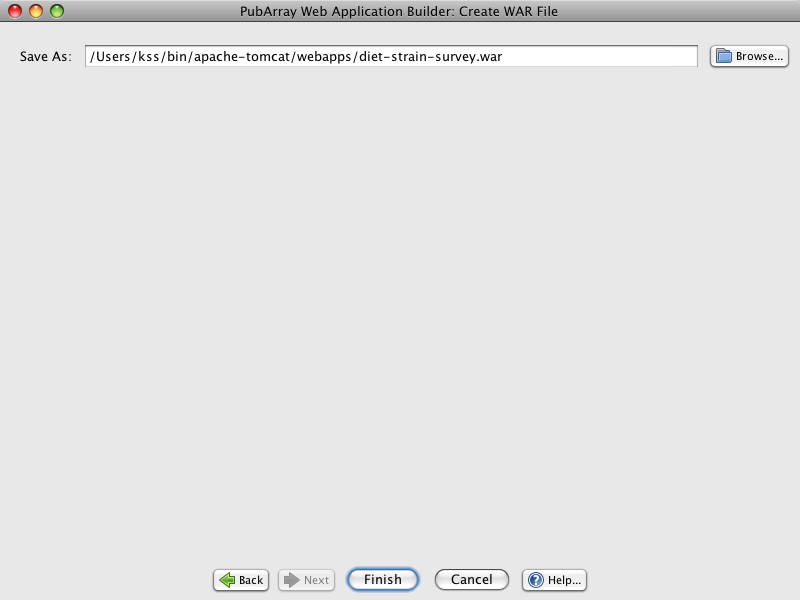

PubArray Installer
PubArray is a database and web application that allows researchers to
explore and share thier analized microarray data. Unlike similar web
applications PubArray is not intended to be a centeral repository for
microarray data. Rather, any researcher can host thier own instances
of PubArray. This key difference makes PubArray a good option for the following
use cases:
- Publishing the results of a microarray analysis to your institution's own
web resources.
- Publishing private microarray data sets to a secure internal network.
- Making intermediate analysis results available to project collaborators
for exploration
Because researchers will be creating thier own instances of PubArray we have
spent effort automating and simplifying as many of the technical steps as
possible. In fact, we have tried to make it so simple that you can regard an
instance of PubArray as disposible: If you don't like something about how your
instance is configured, throw it out and start over. If a new version of
PubArray is released and you want to upgrade, throw it out and start over. If
your analysis has progressed and you want to publish the updated results ...
Experiment Overview
The experiment overview panel allows you to name and describe the experiment
that you are publishing with PubArray.

The input fields for this panel work as follows:
- Experiment Name: This name will appear as the title of your web
application so choose the name that you want people to associate with your
experiment.
- Description: The description will appear as the first block of text under
the title. This should include high level information about your microarray
experiment and can also include hyper links to point visitors to more
detailed experiment documentation.
- Description Format: You can either choose to format your message as
"Plain Text" or as an "HTML Fragment". If you choose "Plain Text" than any
special HTML characters such as '<' or '>' will be escaped so that
the user will see exactly what you have typed. Line breaks will only be
preserved when two line breaks are entered in a row. The "HTML Fragment"
option allows you to enter any HTML that would be valid within a
<body> tag. This gives you much more control over how that
description is formatted and it allows you do add links to your description
as the example above demonstrates.
Load Design File
This panel allows you to load the experiment's design file. The column headers
for the design file should match the design factors that describe your
experiment and each row in the design file (excluding the header row) describes
the values for a single array. As a point of reference, this is the same design
file format that is accepted by the R/maanova program. After you select the
design file for your experiment you will be shown a preview of the file's
contents as shown below.

The input fields for the "Load Design File" panel:
- File Location: This should be the full path to your experiment's design
file. You can use the browse button to easily locate your design file.
- Table Name: The "logical" table name for your design panel. This is the
name that users of your web application will see.
- Format: The format of the design file. Both "Tab Delimited" or "Comma
Separated" are allowed.
- Match Design Rows to Data Columns Using: The rows of your design file
need to be match up to the columns of the data file. This field allows you
to to match on "Row Ordering" or one of the design factors. If you match on
"Row Ordering" then your design file's row order should match up with your
data file's column order. If you match on one of the row factors then the
values in that design column should match the header names used in the data
file.
Load Data File
The "Load Data File" panel allows you to load your microarray intensity data.
The data file's leftmost column must contain unique probeset/gene identifiers.
The other columns contain intensity values for each of the microarrays that are
a part of your experiment. Note that the column count in the data file
(ignoring the probeset ID column) should match the row count in the design file
(ignoring the design files header row).

The input fields for the "Load Data File" panel work pretty much the same as
the fields for the "Load Design File" panel.
Load Annotation and Statistics
The "Load Annotations and Statistics" panel allows you to upload probeset/gene
statistic and annotation files. The structure of these files is similar to th
structure of the data file. The rightmost column must contain unique
probeset/gene identifiers which match the identifiers in the data file. The
column identifiers should describe the annotation or statistics for that
column. The data can be either numeric data or text data.

Load Per-Gene Image Directories
The "Load Per-Gene Images Directories" panel can be used to load any custom
graphs that you have generated for the probesets/genes in your microarray
experiment. If you do not have any such graphs you can skip this step using the
"Next" button.
The directories that you select must contain images where the file name will
exactly match one of the probeset/gene IDs in your data file and the file
extension can be one of ".jpg", ".jpeg", ".gif" or ".png". So, for example if
our experement uses gene ID's: "gene1", "gene2" and "gene3" we might add a
"Liver" directory containing images like:
- gene1.png
- gene2.png
- gene3.png
- ...

Create WAR File
The final panel allows you to create the WAR file that you will deploy for your
web application. A default file is chosen for you but you can change it to
whatever filename you like as long as you keep the ".war" file extension.

Deploying the WAR File
Once you have created this file you can deploy it using the latest version of
the tomcat application server (the WAR
file is completely self-contained so no other files need to be uploaded to
tomcat). The only other thing that you may need to pay attention to is the
memory limit used for tomcat. Since PubArray instances typically contain a lot
of data it is recommended that you allocate more than the default amount of
memory to the tomcat server. This step may not be necessary if your
experiment's dataset is relatively small. Here is an example of launching
tomcat on Mac or Linux with a memory limit of 1 GB (this assumes your working
directory is the tomcat home directory and that you are using a bash shell).
JAVA_OPTS="-Xmx1024m" ./bin/startup.sh
That should do it. You should now have a working instance of PubArray for your
experiment.